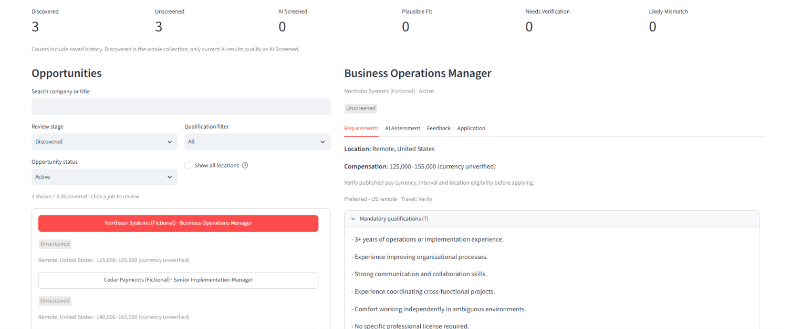
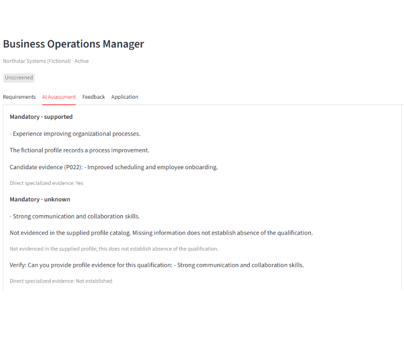

Business operations
At Prestige, I manage operations, staffing, pricing, and customer acquisition while developing a more predictable recurring service line.
Owner accountabilityBusiness operations · Strategy · Implementation
I’m Brian Wilhite, owner of Prestige Cleaning Arizona LLC and a former implementation/onboarding manager. I combine firsthand responsibility for running a company with experience improving processes and coordinating across functions.
I also build practical tools through AI-assisted development—with hands-on workflow design, testing, and iteration. My focus is turning operational problems into processes people can use.
Roles I’m targeting
01 / Expertise
Business ownership, cross-functional implementation, and practical tools—grounded in work I’ve done.
At Prestige, I manage operations, staffing, pricing, and customer acquisition while developing a more predictable recurring service line.
Owner accountabilityAt Repurpose House, I helped reduce typical onboarding duration from approximately 12–14 business days to 7–9 business days through cross-functional implementation/onboarding work.
A shorter onboarding cycleMy work spans client onboarding, operational systems, and cross-functional coordination, as well as hiring, training, and technology selection as a business owner.
Carry decisions into practiceJobOps combines workflow design and substantial AI-assisted coding, with my hands-on testing, debugging, and iteration. The completed MVP has 144 passing automated tests.
Practical tools, tested02 / Selected work
Service-business operations, cross-functional onboarding, and a completed software MVP. Each starts with an operational problem.
Building a more predictable recurring residential service line in an established Tucson business.
Prestige Cleaning Arizona LLC served Realtors, property managers, and commercial customers. One-time projects often brought unpredictable labor needs. I led an August–October 2026 initiative to develop recurring service and anticipate growth bottlenecks.
Operating priority: Frequent field work meant processes needed to reduce dependence on my constant availability before pursuing more customer volume.
Read the full case study (PDF, opens in a new tab)PDF · 3 pages
Repurpose House · Implementation Management & Business Operations
A local workspace for discovering opportunities, screening qualifications, and preparing application materials.
Human control: Approval gates before paid AI operations. Applications are not submitted automatically.
Review the code & project documentation (opens in a new tab)From discovery to reviewed materials
Job discovery and a local Streamlit dashboard
Structured qualifications and candidate-evidence validation
Human approval before paid AI operations
Editable Word exports, feedback, and review
Completed MVP
AI-assisted development with hands-on validation.
Inside the application
Demonstration using fictional job and candidate data. Qualification examples were prepared and validated locally; no live discovery or AI screening was performed for these screenshots.
The Streamlit dashboard with fictional saved opportunities, filtering controls, and structured job requirements.

View full resolution (opens in a new tab)A locally prepared example links process-improvement experience to candidate evidence P022 and marks another requirement unknown when supporting evidence is missing.

View full resolution (opens in a new tab)03 / Professional background
Responsibility for a business, alongside experience helping clients through onboarding and coordinating operational work.
Owner
Responsible for operations, customer acquisition strategy, staffing, pricing, training, technology selection, and process improvement.
Implementation / Onboarding Management
Worked across client onboarding, operational systems, and cross-functional coordination.
Helped reduce typical onboarding duration from approximately 12–14 business days to 7–9 business days.
04 / My approach
At Prestige, that meant anticipating staffing and administrative bottlenecks before pursuing greater volume. In JobOps, it meant making evidence traceable and requiring approval before paid AI work. Both reflect the same priority: processes that remain useful when I’m not constantly available.
05 / Connect
If you’re hiring for Business Operations, Strategy & Operations, or a Chief of Staff role, I’d welcome a conversation about your team’s operational challenges and how my experience could contribute.